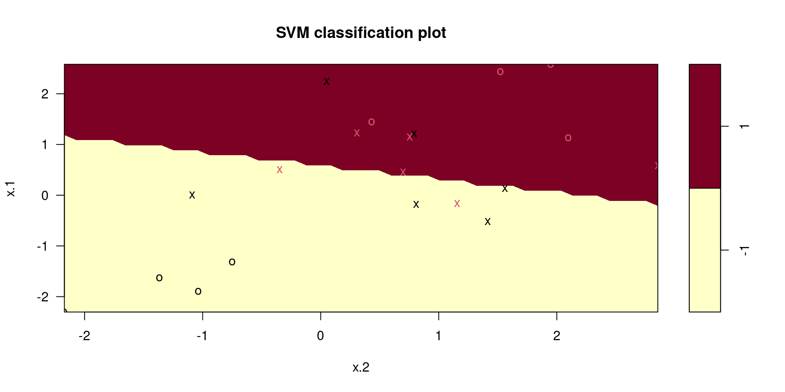

Support Vector Machines
Learning Outcomes
- Maximal Margin Classifier
- Support Vector Classifier
- R Code
Maximal Margin Classifier
Motivating Example
Maximal Margin Classifier
The Maximal Margin Classifier will impose a hyperplane on a graph that will classify the data given a vector of predictor variables.
Hyperplane
Given a p-dimensional space, a hyperplane is flat affine subspace of p-1 dimensions. It is mathematically defined as:
\[ \beta_0 + \beta_1X_1 + \beta_2 X_2 + \cdots+\beta_pX_p = 0 \]
Hyperplane

Constructing the Hyperplane
A hyperplane is constructed by maximizing the margin \(M\) of the data points that are farthest from the theoretical margin. The data points that define the outer edge of the margins are known as support vectors.
Optimization Problem
\(\overset{\mathrm{maximize}}{\tiny\beta_0, \beta_1,\ldots,\beta_p,M}\ \large M\)
subject to \(\sum^p_{j=1}\beta_j^2 = 1\)
\(y_i(\beta_0 + \beta_1X_{1i} + \beta_2 X_{2i} + \cdots+\beta_pX_{pi})\geq M \ \forall \ i=1,\ldots,n\)
Maximal Margin Classifier

Support Vector Classifier
Support Vector Classifier
Maximal Margin Classifiers have one fatal defect, the data points must be completely on one side of the margin. This does not allow room for error.
A Support Vector Classifier allows for data points to be misclassified if need be.
It achieves this by implementing a Cost mechanism, denoted as \(C\), to account for any errors for data points.
Support Vector Classifiers

Optimization Problem
\(\overset{\mathrm{maximize}}{\tiny\beta_0, \beta_1,\ldots,\beta_p,\epsilon_1,\ldots, \epsilon_n,M}\ \large M\)
subject to \(\sum^p_{j=1}\beta_j^2 = 1\)
\(y_i(\beta_0 + \beta_1X_{1i} + \beta_2 X_{2i} + \cdots+\beta_pX_{pi})\geq M (1-\epsilon_i) \ \forall \ i=1,\ldots,n\)
\(\epsilon_i\geq 0\)
\(\sum^n_{i=1} \epsilon_i \leq C\)
Budget C
The tuning parameter \(C\) is known as the budget parameter for error. When the data point is on the correct side of the margin, then it has an error of \(0\). When a data point in on the wrong side the margin, it has a bit of error. When the data point is on the opposite side of the hyperplane, then it has an error greater than \(1\). This is allowed as long as the sum of errors are less than or equal to \(C\).
Support Vector Machines
Motivating Example
Motivating Example

Support Vector Machines
A Support Vector Machine will create a nonlinear boundary instead of a line.
It incorporates a kernel function that will compute the similarities between two support vectors.
The kernel function can be loosely claimed how the data is modeled.
Nonlinear Boundary

Nonlinear Boundary

Support Vector Machines Kernels
Linear
Polynomial
Radial
R Code
Support Vector Classifier
x <- matrix ( rnorm (20 * 2) , ncol = 2)
y <- c( rep (-1, 10) , rep (1, 10) )
x[y == 1, ] <- x[y == 1, ] + 1
plot (x, col = (3 - y))dat <- data.frame (x = x, y = as.factor(y))
library(e1071)
svmfit <- svm (y ~ ., data = dat , kernel = "linear",
cost = 10, scale = FALSE )
plot(svmfit, dat)
svmfit$index#> [1] 1 3 4 6 9 10 12 15 16 18 19 20summary(svmfit)#>
#> Call:
#> svm(formula = y ~ ., data = dat, kernel = "linear", cost = 10, scale = FALSE)
#>
#>
#> Parameters:
#> SVM-Type: C-classification
#> SVM-Kernel: linear
#> cost: 10
#>
#> Number of Support Vectors: 12
#>
#> ( 6 6 )
#>
#>
#> Number of Classes: 2
#>
#> Levels:
#> -1 1Cross-Validation Approach for C
set.seed(2434)
tune.out <- tune(svm, y ~ ., data = dat, kernel = "linear",
ranges = list(cost = c(0.001, 0.01, 0.1, 1, 5, 10, 100)))summary(tune.out)#>
#> Parameter tuning of 'svm':
#>
#> - sampling method: 10-fold cross validation
#>
#> - best parameters:
#> cost
#> 0.1
#>
#> - best performance: 0.3
#>
#> - Detailed performance results:
#> cost error dispersion
#> 1 1e-03 0.55 0.4377975
#> 2 1e-02 0.55 0.4377975
#> 3 1e-01 0.30 0.2581989
#> 4 1e+00 0.40 0.3162278
#> 5 5e+00 0.40 0.3162278
#> 6 1e+01 0.35 0.3374743
#> 7 1e+02 0.35 0.3374743bestmod <- tune.out$best.model
summary(bestmod)#>
#> Call:
#> best.tune(METHOD = svm, train.x = y ~ ., data = dat, ranges = list(cost = c(0.001,
#> 0.01, 0.1, 1, 5, 10, 100)), kernel = "linear")
#>
#>
#> Parameters:
#> SVM-Type: C-classification
#> SVM-Kernel: linear
#> cost: 0.1
#>
#> Number of Support Vectors: 16
#>
#> ( 8 8 )
#>
#>
#> Number of Classes: 2
#>
#> Levels:
#> -1 1Prediction
xtest <- matrix(rnorm(20 * 2), ncol = 2)
ytest <- sample(c(-1, 1), 20, rep = TRUE)
xtest[ytest == 1,] <- xtest[ytest == 1, ] + 1
testdat <- data.frame (x = xtest , y = as.factor(ytest))ypred <- predict(bestmod, testdat)
table(pred = ypred, truth = testdat$y)#> truth
#> pred -1 1
#> -1 9 0
#> 1 1 10R Code: SVM
set.seed(1)
x <- matrix(rnorm(200 * 2), ncol = 2)
x[1:100, ] <- x[1:100, ] + 2
x[101:150, ] <- x[101:150 , ] - 2
y <- c(rep(1, 150), rep(2, 50))
dat <- data.frame (x = x, y = as.factor(y))plot(x,col=y)library(e1071)
train <- sample(200, 100)
svmfit <- svm(y ~ .,
data = dat[train, ],
kernel = "radial",
gamma = 1,
cost = 1)
plot(svmfit, dat[train, ])